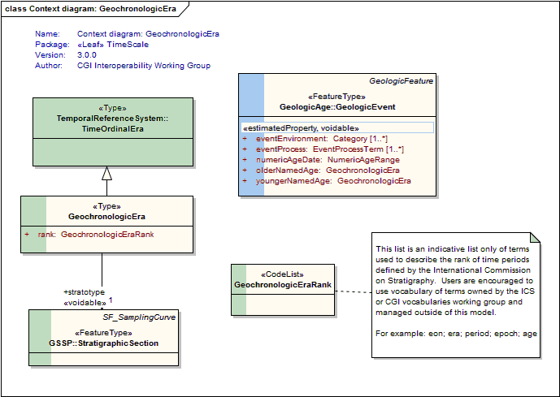
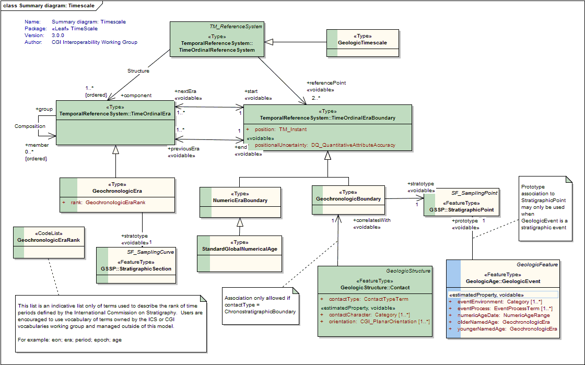
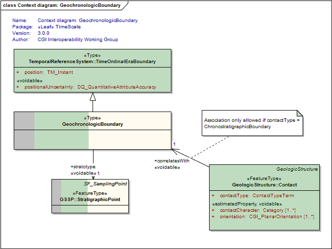
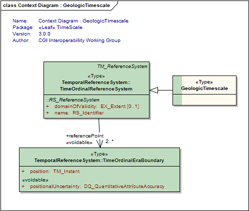
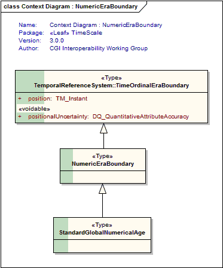

Package GeoSciML/GeologicTimescale/TimeScale
The Timescale package describes geologic time periods (geochronologic eras) and the boundaries between them.
Class Summary |
|
| <<Type>> Classes | |
GeochronologicBoundary
<<Type>>
|
A boundary between two geochronologic time periods |
GeochronologicEra
<<Type>>
|
The association of an era with a stratotype is optional. In the GSSP approach recommended by ICS for the Global Geologic Timescale, Unit Stratotypes are not used. Rather, the association of an Era with geologic units and sections is indirect, via the association of an era with Boundaries, which are in turn tied to Stratotype Points, which occur within host Stratotype Sections. Note that the "German School" defines stratigraphic eras conceptually, without reference to stratotypes. |
GeologicTimescale
<<Type>>
|
The classic "Geologic Timescale" comprising an ordered, hierarchical set of named "eras" is an example of an Ordinal Temporal Reference System. It may be calibrated with reference to a numeric Temporal Coordinate System, but is in principle defined independently. |
NumericEraBoundary
<<Type>>
|
Used for pre-Ediacaran and Pleistocene / Holocene boundaries in the standard timescale |
StandardGlobalNumericalAge
<<Type>>
|
A standard numeric age point (a numeric analogue to a 'golden spike') applicable to the formal subdivision of the Precambrian, and perhaps the Pleistocene/Holocene boundary (Walshe, Gradstein and Ogg, 2004) |
| <<CodeList>> Classes | |
GeochronologicEraRank
<<CodeList>>
|
This list is an indicative list only of terms used to describe the rank of time periods defined by the International Commission on Stratigraphy. Users are encouraged to use vocabulary of terms owned by the ICS or CGI vocabularies working group and managed outside of this model. For example: eon era period epoch age |
Tagged Values |
||
| Tag | Value | Notes |
| xsdDocument | timeScale.xsd | Description: Name of an XML Schema document to create representing the content of this package |
| xsdEncodingRule | iso19136_2007 | Values: iso19136_2007 | iso19139_2007 | iso19136_2007_INSPIRE_Extensions Default: iso19136_2007 Description: XML Schema encoding rule to apply |
UML Diagram: Context diagram: GeochronologicEra

UML Diagram: Summary diagram: Timescale

UML Diagram: Context diagram: GeochronologicBoundary

UML Diagram: Context Diagram : GeologicTimescale

UML Diagram: Context Diagram : NumericEraBoundary
